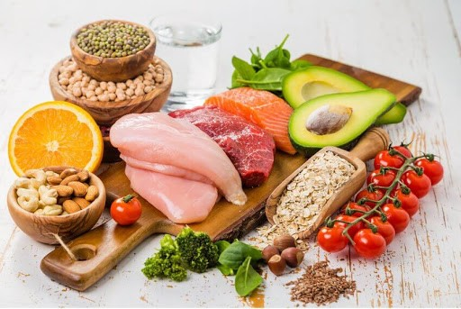
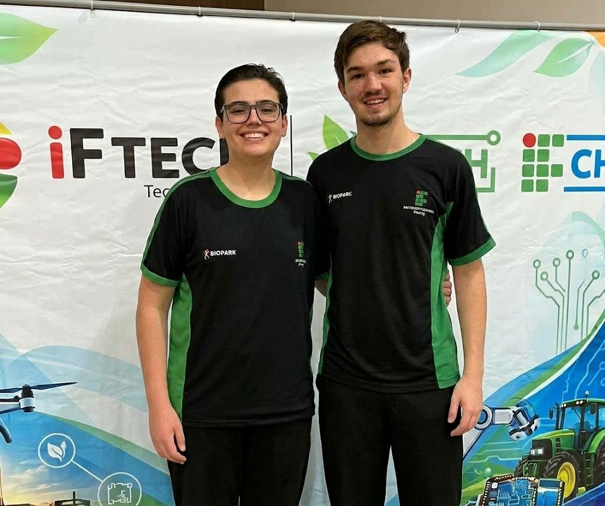
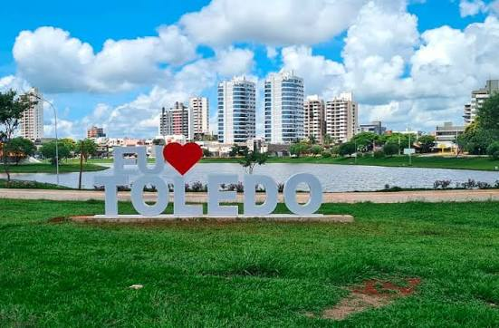

Bem-vindo ao bIFinhos
Aprenda sobre a alimentação saudável e a sua situação em Toledo-Pr
Essa é a página inicial do nosso projeto. Utilize o menu superior para navegar pelas biografia dos integrantes e pelo artigo de saúde alimentar.


